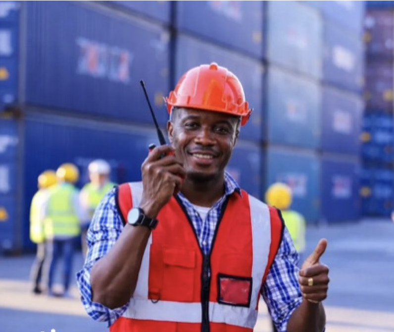

Tout a commencé à Abidjan. C'est en Côte d'Ivoire, en 1962, qu'est née la Compagnie des Experts Maritimes, avant de s'étendre progressivement à l'ensemble de la sous-région. Plus de six décennies plus tard, Abidjan demeure le cœur battant du réseau : siège social, centre de coordination et vitrine d'un savoir-faire reconnu.
Un siège historique
Implantée au plus près du port d'Abidjan, la filiale ivoirienne concentre une part importante de l'activité du réseau : expertises maritimes, IARD, transport, marchandises, avaries et dossiers judiciaires. C'est aussi depuis Abidjan que s'organise la coordination des huit filiales, pour garantir la même exigence de qualité d'un pays à l'autre.
Un réseau né à Abidjan, tourné vers toute l'Afrique de l'Ouest.
Un hub logistique majeur
Le port d'Abidjan est l'un des plus actifs de la côte ouest-africaine : porte d'entrée de marchandises pour la Côte d'Ivoire, mais aussi corridor vers les pays de l'hinterland comme le Burkina Faso, le Mali ou le Niger. Cette position en fait un terrain d'intervention permanent pour les experts du réseau — inspections, constats, contrôles de cargaisons.

Au service des huit filiales
Abidjan n'est pas seulement une filiale : c'est le point de convergence d'un réseau régional. De la Côte d'Ivoire au Nigeria, en passant par le Ghana, le Bénin, le Togo, la Guinée, le Burkina Faso et le Niger, chaque implantation partage les mêmes standards et la même culture de la rigueur documentaire.
📍 Filiale de Côte d'Ivoire — repères
- Siège social : 01 BPM 686 Abidjan 01 — Côte d'Ivoire ;
- Rôle : siège historique et coordination du réseau ;
- Domaines : maritime, IARD, transport, marchandises, avaries, judiciaire ;
- Depuis : 1962.
De ce point d'ancrage, le Réseau CEM continue d'accompagner assureurs, armateurs, importateurs et industriels dans toute la sous-région.